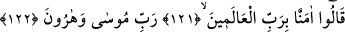
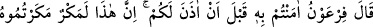
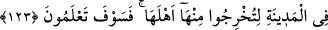

mucizesini görünce büyücülerin şiddetli ve süratli bir şekilde secdeye kapanmaları,
yüzü üzere yere bırakılan kimsenin durumuna benzetilmiştir. Bu sebeple onların
durumundan, kedisine benzetilenin (müşebbehün bih) durumuna delâlet eden ifadelerle
bahsedilmiştir.
121-122. “Musa ve Harun’un Rabbi olan âlemlerin Rabbine inandık” dediler.
“Âlemlerin Rabb’ine inandık, Musâ ve Harûn’un Rabb’ine” dediler.” Sihirbazlar,
inandıkları rabbin Firavun olduğu sanılmasın diye Mûsâ (a.s.)’dan sonra Harûn (a.s.)’ı
da zikretmişlerdir. Çünkü Firavun, Mûsâ (a.s)’ı küçükken yetiştirmiş olmakla birlikte
Hârûn (a.s)’ın yetişmesinde hiç katkısı olmamıştır.
İbn Abbâs (r.a.) demiştir ki: Büyücüler iman etti ve İsrailoğulları’ndan tam altmış bin
kişi Mûsâ (a.s.)’a tâbi oldu.
123. Firavun dedi ki: “Ben size izin vermeden ona iman mı ettiniz? Bu, hiç
şüphesiz şehirde, halkını oradan çıkarmak için kurduğunuz bir tuzaktır. Ama
yakında (başınıza gelecekleri) göreceksiniz!
“Firavun” sihirbazların yaptıklarını reddederek ve onları azarlayarak “dedi ki: Ben
size izin vermeden ona iman mı ettiniz!?” Bu ifâde tarzının benzeri: “Rabbinin
kelimeleri tükenmeden, deniz tükenir.” (el-Kehf, 18/109) ayetidir. Maksad, onun izin
vermesinin imkân dahilinde olduğunu ifâde değildir.
“Bu bir tuzaktır, şehirde bu tuzağı kurdunuz ki,” Sizin bu yaptığınız, gördüğünüz
mucizenin açıklığı ve delilin kuvvetliliğinden kaynaklanan bir şey değildir. Bilakis bu,
Mûsâ’nın ve sizin karşılaşma yerine çıkmadan Mısır’da yapmayı planladığınız bir
hiledir.
Rivayet edilir ki, Mûsâ (a.s.) ile sihirbazların başkanı karşılaştı. Mûsâ (a.s.) ona:
“Bak, eğer ben sana galip gelirsem bana inanacak ve benim getirdiğimin gerçek
olduğunu kabul edecek misin?” dedi. Büyücü: “Vallahi, eğer galip gelirsen muhakkak
sana inanacağım” dedi. Firavun’da bu konuşmayı işitiyordu. İşte bu sebeple Firavun, bu
sözü söyledi. “halkını” yani Kıbtîleri “oradan çıkarasınız,” ve orası yalnız size ve
İsrailoğulları’na ait olsun, “ama” yaptığınızın neticesinin ne olacağını “yakında
bileceksiniz!” dedi. Bu kapalı bir tehdittir. Tafsîlâtı ise şöyle belirtilmektedir: